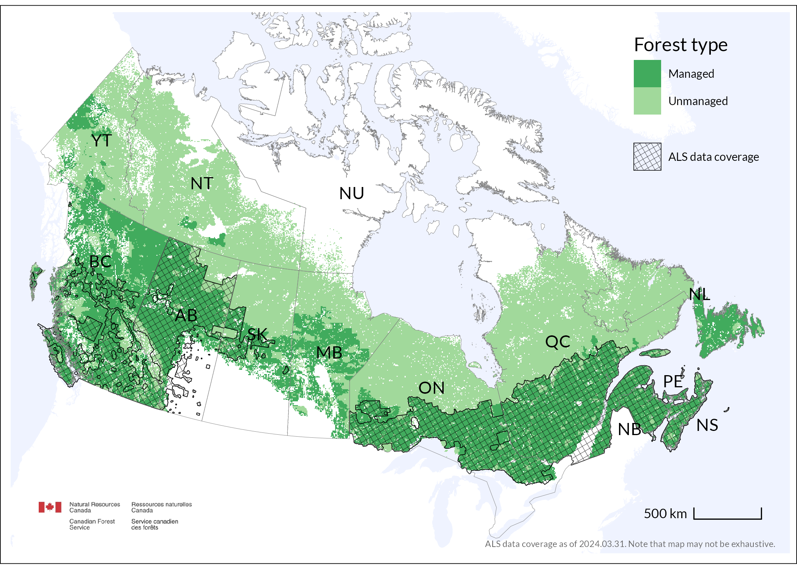
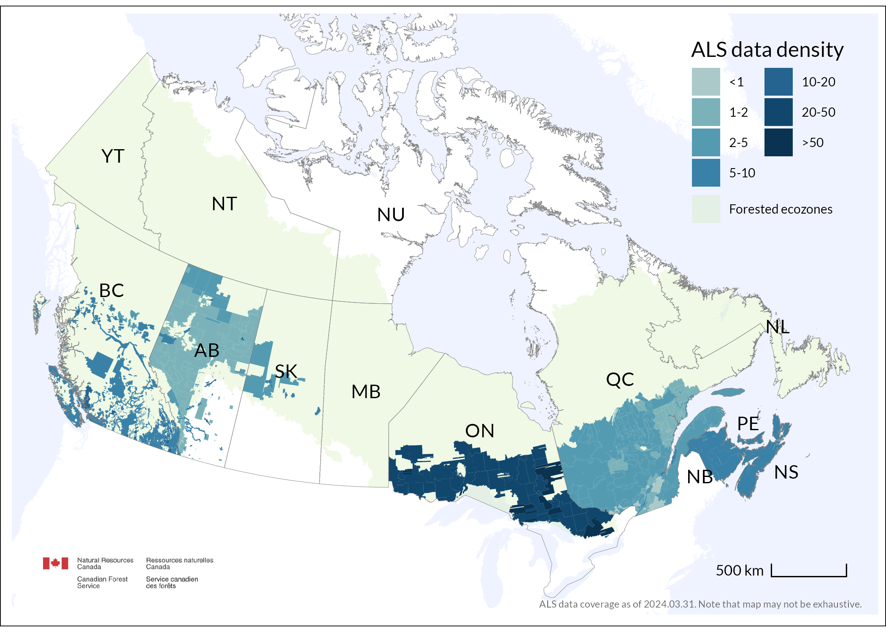
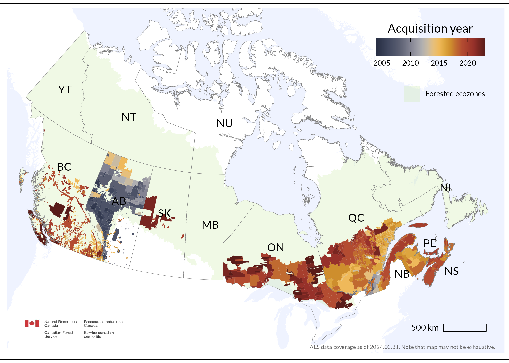

| Jurisdiction | Total area | Total forest area | Managed forest area | ALS area (total) | ALS area (managed forest) |
|---|---|---|---|---|---|
| British Columbia (BC) | 925186 | 632,864 (68.4%) | 500,534 (54.1%) | 206,335 (22.3%) | 122,942 (59.6%) |
| Alberta (AB) | 642317 | 341,261 (53.1%) | 250,011 (38.9%) | 386,888 (60.2%) | 233,081 (60.2%) |
| Saskatchewan (SK) | 591670 | 252,942 (42.8%) | 85,897 (14.5%) | 53,958 (9.1%) | 35,438 (65.7%) |
| Ontario (ON) | 917741 | 652,763 (71.1%) | 334,150 (36.4%) | 380,393 (41.4%) | 284,444 (74.8%) |
| Quebec (QC) | 1365128 | 809,223 (59.3%) | 380,741 (27.9%) | 546,938 (40.1%) | 373,770 (68.3%) |
| New Brunswick (NB) | 71450 | 65,902 (92.2%) | 58,270 (81.6%) | 78,520 (100%) | 58,479 (74.5%) |
| Prince Edward Island (PE) | 5660 | 2,888 (51%) | 2,493 (44%) | 6,762 (100%) | 2,497 (36.9%) |
| Nova Scotia (NS) | 53338 | 47,958 (89.9%) | 37,708 (70.7%) | 65,953 (100%) | 37,802 (57.3%) |
CanadaForestryLidar
ALS data coverage in Canada
A curated set of maps and summary statistics on the ALS data accompanying the manuscript:
White, J.C., Tompalski, P., Bater C., Wulder, M.A., xxx, (2024). Enhanced forest inventories in Canada: implementation, status, and research needs. Canadian Journal of Forest Research (in preparation)

Point density

ALS acquisition year

Data
ALS data used in Enhanced Forest Inventory
| Jurisdiction | Data sharing policy | URL |
|---|---|---|
| BC | LAS files are open data | www.lidar.gov.bc.ca |
| AB | Sharing is limited to GoA partners (e.g. academia) for collaborative projects and forest industry. | |
| SK | LAS files are currently not shared as open data. | |
| ON | LAS files are open data | https://geohub.lio.gov.on.ca/maps/lio::forest-resources-inventory-leaf-on-lidar/about |
| QC | LAS files available for purchase | http://geoboutique.mern.gouv.qc.ca/ |
| NB | LAS files are open data | http://www.snb.ca/geonb1/e/dc/lidar.asp |
| PE | LAS files and derivatives available on request. | |
| NS | LAS files and derivatives are open data | https://nsgi.novascotia.ca/datalocator/elevation/ |
Additional ALS datasets in Canada
ALS data acquired over cities or for research are not included in the maps and summaries above. Some of those datasets can be found
- https://open.canada.ca/data/en/dataset/957782bf-847c-4644-a757-e383c0057995